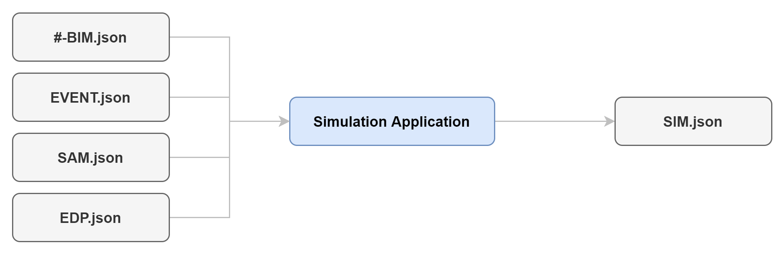

2.2.6. Simulation Applications
The simulation application specifies parameters and executes the script for the response simulation. These parameters may include the integrator scheme, convergence tolerance, step size, etc. of the numerical analysis.
It takes as input the BIM file, the EVENT file, the SAM file, and the EDP file.
After response simulation is completed, the EDP.json file is populated with the resulting EDPs and saved in the simulation working directory. Note that the SIM.json file is not saved in the directory.

The following options for simulation applications vary in the type of finite element program or procedure used for EDPs estimation.
\Users\kuans\Program\Developing/SimCenterBackendApplications/meta/index.yaml